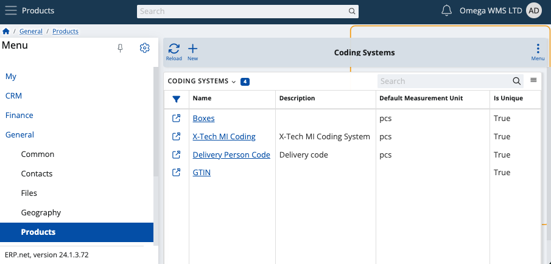
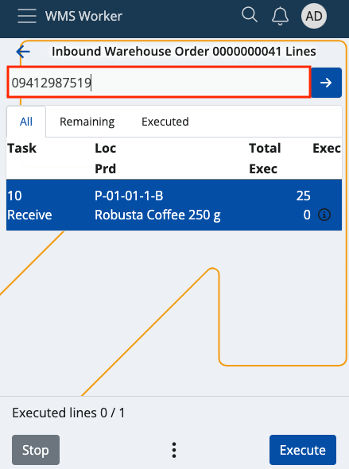
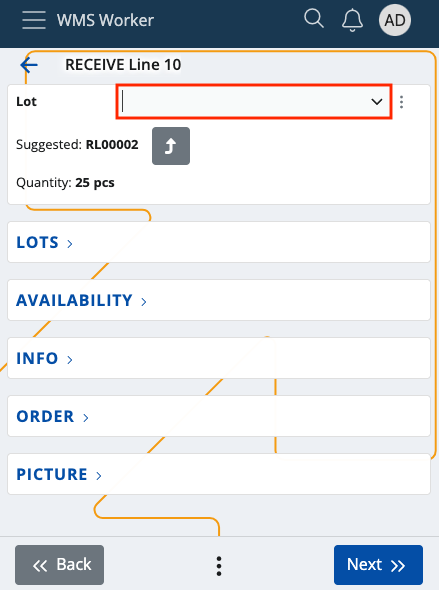
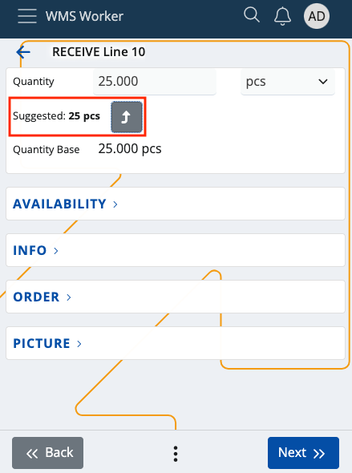
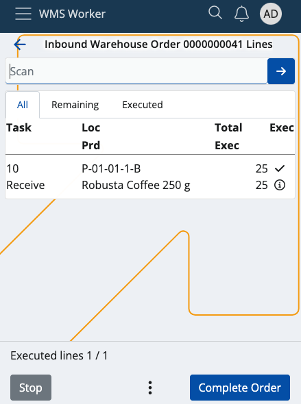

Recalculate quantities in the WMS Worker
If a product has a defined additional coding system with a default base measurement category, it is possible to recalculate the product's quantities when scanning in the WMS Worker app.
For example:
You have an order which contains dozens of pcs of coffee which arrive in a box with its own unique code. The box is defined for the coffee as a coding system and has a default base measurement category of 20 pcs. You will be able to instantly execute 20 pcs of coffee with a single scan of the box's product code. This overrides the product's own default unit.
If no measurement category is set, the product will still be recognized but its default unit (e.g. 1pcs) will be taken into account instead.
Prerequisites
Make sure your product has a defined coding system.
You can find a list of all coding systems and create new ones on-demand in the Web Client.

Use the WMS Worker App to start an order and scan the product code of the coding system of the product(s).
How it works
Assuming your order consists of a box with several instances of products, you can scan their coding system's product code right away.
Within the SCAN field, provide the respective code, or use your mobile device to scan the barcode of the box.

The standard Quantity step will be skipped and you will only need to select a lot.

You will get an auto-suggested product quantity based on the provided measurement unit of the coding system.

Tap Next to confirm the operation. Several or all pcs of your product will be executed instantly.

Note
You can multiply a coding system's code just like a regular product unit. For instance, if the coding system has a default measurement unit of 25pcs, multiplying it by 4 will give you 100pcs of the product ready to be scanned in one-go.
*The attached screenshots are from version 24.